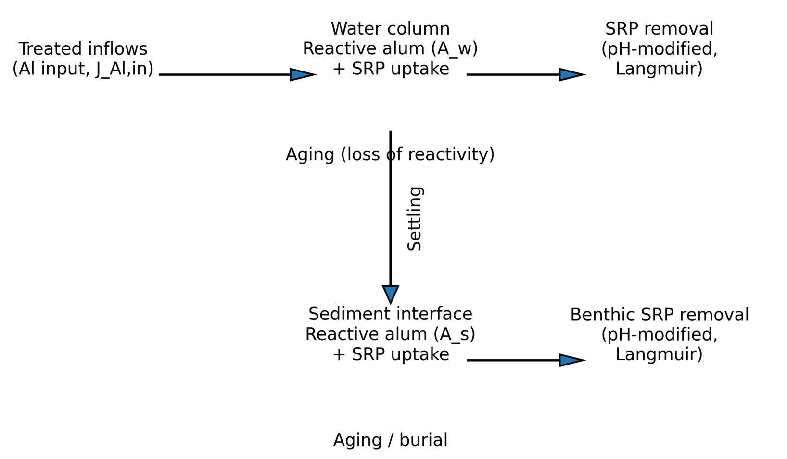
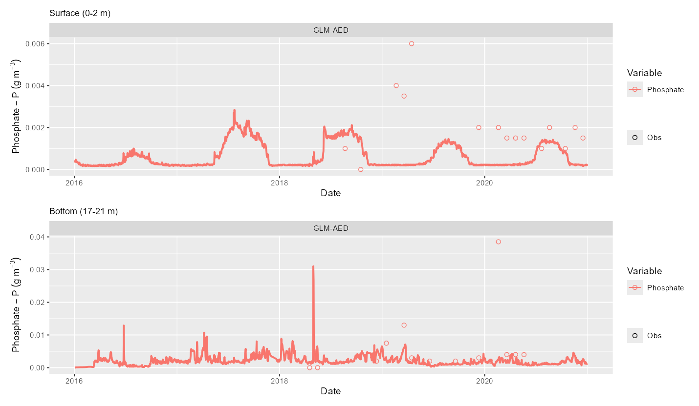
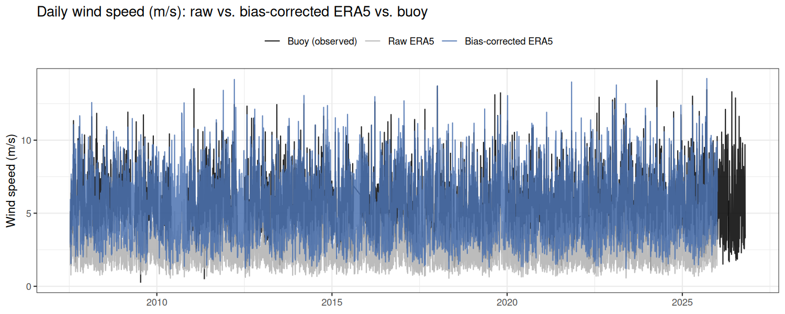
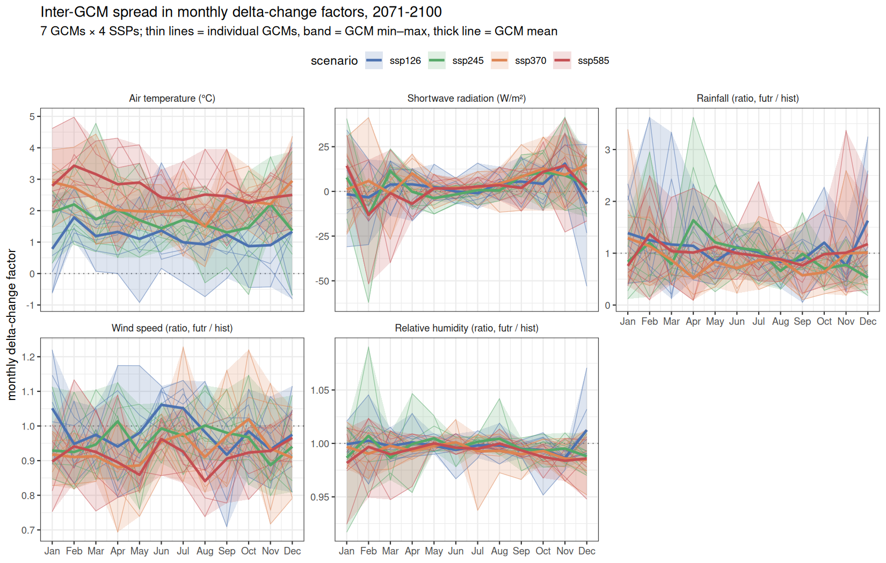

Overview of my Research
2026-10-20
AI Acknowledgement
I used Claude to assist with this presentation, text, figures, tables and code. I have reviewed and edited the content as needed and take full responsibility for the final version.
About
PhD Dundalk Institute of Technology, Ireland.
- Thesis on water quality forecasting in lakes, and also climate change impacts on lake water temperature globally.
Post-doc at Virginia Tech, USA, developing teaching modules for Ecological Forecasting.
Currently a Lake Scientist at Limnotrack working on water quality modelling and management & Post-doc UoW (2-days).
Where I have worked
Short version
Climate change may increase the length and number of stratification events in Lake Rotorua, driving nutrient loading and algal blooms.
Alum dosing has been shown to reduce phosphorus and could help mitigate those climate effects.
Lake Rotorua monitoring sites
Lake Rotorua (LERNZmp lake 11133), depth contours and BoPRC chemistry sites; dashed = catchment bounding box
What is Plan Change 10?
Plan Change 10
Bay of Plenty Regional Council rules for managing nitrogen loss in the Lake Rotorua groundwater catchment. Gives effect to the RPS target of a 435 tN/yr sustainable lake nitrogen load by 2032 (needed for a TLI of 4.2).
PC 10 Lake Modelling
To help answer questions:
Does 435 tN (and the nominal 37 tP/yr external load) still hold under climate scenarios?
Alum dosing efficacy and risk under future climate.
Sensitivity of the N-P balance.
Model validation.
How it all fits together
Workflows
Gather data
Synthesise data
Model selection
Configuration
Sensitivity Analysis
Calibration
Assessment
Scenario simulations
Synthesis
Personal Workflow
Key components:
R packages & GitHub
targetspipelineProject website
R packages
Developed multiple packages:
AEME - Building and running models
aemetools - Sensitivity analysis and calibration tools
bathytools - Bathymetry and hypsography tools
ltapi - Limnotrack API
metscale - Climate data processing and downscaling
targets pipeline
targets is an R package for building reproducible pipelines. It tracks dependencies and only reruns steps that need updating.
Each box is a target; arrows are labelled with the function that builds the next one.
- Grey input data
- Blue intermediate
- Orange output
Change one step and only what is downstream reruns.
What a target looks like
Each step is a target: a name, and the code that makes it.
targets reads the names in the code to work out the dependency graph.
targets pipeline
Alternative to:
01_gather_data.R
02_synthesise_data.R
03_model_selection.R
03b_fix_model.R
04_configuration.R
Project Website
- Helpful for communicating with collaborators and stakeholders.
- Built with Quarto and Reveal.js.
- Uses data and
targetsto automatically generate figures and tables.
Where to next?
GLM-AED, the Ōhau weir and water balance, heat balance, thermal structure and oxygen
Lake level, buoy and CTD, chemistry, meteorology, inflows and sediment flux studies
Model assessment, Bayes vs frequentist, PEST++ prior to posterior, posterior variation
How alum is modelled, sediment fluxes, FRP response, and dosing under climate change
CMIP6 and SSPs, ERA5 bias correction, delta change, scenario design and lake impacts
Lake Modelling
Where to start
- What is the question we are trying to answer?
How will Lake Rotorua water quality change under future climate?
To what extent does the stream alum dosing affect water quality?
Hypothesis Figure
GLM

Source: AED
Water Balance
Lake level is controlled by the Ōhau Channel weir: inflows and rain in, evaporation and weir outflow out.
Weir concept
Heat Balance

Source: AED
Thermal structure
- Stratification
Bottom-water oxygen
Wrap up: Lake Modelling
- GLM-AED is a 1-D model: horizontal variation is assumed negligible
- The water balance is controlled by the Ōhau weir; the heat balance sets stratification
- Lake Rotorua is polymictic: stratified spells last days to weeks and then mix
Sensitivity Analysis & Calibration
Sensitivity analysis: which parameters matter?
Before calibrating, ask which parameters each target actually responds to.
- Morris elementary effects: change one parameter at a time across its range, repeated along random trajectories
- Effect size: in the lake’s own tolerance. 1 means the parameter, moved across its range, shifts the metric as much as the lake varies between years
- Outputs: 33 process signatures (stratification, anoxia, internal loading, chlorophyll)
Sensitivity results
How the screening shaped the calibration
| What the screening showed | Decision in the calibration |
|---|---|
| Wind scaling has the largest single effect on mixing, but wind is measured on the lake | Fix MET_wndspd at 1; put the adjustment in mixing and heat-flux coefficients (coef_wind_stir, cd, coef_mix_hyp) |
| Stratification and anoxia respond to the same mixing parameters | Calibrate physics and oxygen first (stage 1), so later stages inherit a sound mixing regime |
| Deep-zone sediment oxygen demand is the one biogeochemical lever for oxygen | Calibrate per-zone oxygen demand in stage 1, with the measured values as the prior and wider bounds |
Model Assessment
“I know that I know nothing” - Socrates
Model Assessment 2
Important to relate this to your modelling question
Time series: model vs observations
Model vs observed
Summary of model fit
Fit metrics
Posterior variation: time series
Same model, parameter sets drawn from the calibration posterior (black = best fit).
Posterior variation: skill by member
Frequentist vs Bayes
Frequentist
- There is one true value of the parameter, and we are trying to estimate it.
Bayesian
- There is a distribution of possible values for the parameter, and we are trying to estimate that distribution.
Bayes’ theorem
\[ \underbrace{\color{#0072B2}{p(\theta \mid \text{data})}}_{\color{#0072B2}{\text{posterior}}} \;\propto\; \underbrace{\color{#D55E00}{p(\text{data} \mid \theta)}}_{\color{#D55E00}{\text{likelihood}}} \;\times\; \underbrace{\color{#7f7f7f}{p(\theta)}}_{\color{#7f7f7f}{\text{prior}}} \]
For our regression, \(\theta = (m, b)\)
Reading the formula
- Prior: what we believed before the data
- Likelihood: how well each value explains the data
- Posterior: our updated belief
The posterior is a compromise between the prior and the data.
Bayes in lake calibration
Example parameter: sediment phosphorus release rate
| Prior | Measured sediment P flux from [student]’s core incubations |
| Likelihood | How well simulated TP, chlorophyll-a and bottom oxygen match the lake monitoring data for each value |
| Posterior | The values consistent with both the experiment and the lake record |
Prior, likelihood and posterior
Example: Linear regression
We have a set of data points (x, y) and we want to fit a linear model y = mx + b.
For the Frequentist approach, we would find the best-fit line that minimizes the sum of squared errors. We would then report the estimated slope (m) and intercept (b) along with confidence intervals.
For the Bayesian approach, we would specify prior distributions for m and b, and then use the data to update those priors to posterior distributions. We would then report the posterior distributions for m and b, which give us a range of plausible values for the parameters.
Frequentist: one best-fit line
Bayesian: many plausible lines
What each approach reports
Example: Linear regression figure 2
Frequentist vs Bayes (easy version)

Source: xkcd #1132 by Randall Munroe, CC BY-NC 2.5
Calibrating Lake Models
Use a similar logics
Prior to posterior: bottom-water oxygen
Sediment oxygen demand by zone, calibrated against bottom-water oxygen and stratification signatures with pestpp-ies (80-member ensemble).
Prior to posterior: phosphorus release
Ensemble and misfit
Calibrated parameters: how much did the data tell us?
PEST++
Connections
Wrap up: Calibration and uncertainty
- Temperature and level are well calibrated and oxygen reasonably; nutrients (FRP, ammonium, TP, chl-a) are weak, so we report differences between scenarios
- PEST++ gives a posterior, not a single answer: informative for oxygen demand, not for P release
- Where the data are weak the prior (the measured fluxes) carries the result
Data
What, where, when, how and why
FAIR Data Principles
Data should be:
- Findable
- Accessible
- Interoperable
- Reusable
Read more (here)[https://www.nature.com/articles/sdata201618]
What data is needed for the Lake Rotorua model?
Categories match the targets pipeline’s data inventory (data_inventory_html)
Observed temperature record
Observed water quality
Lake observations
- Lake level — sub-daily, QC-coded · BoPRC hydrometric network
- Buoy profiler — temperature, DO, chlorophyll · LERNZMP API
- Buoy met station — wind, air temp, humidity, radiation, rain · LERNZMP API
- CTD depth profiles — full record · BoPRC
- Lake chemistry — nutrients, chl-a, turbidity, Secchi, 1989–2025 · BoPRC
Source/access detail: data.qmd
Catchment & climate forcing
- Meteorology — NIWA station #1770, daily + hourly · CliFlo
- Inflows — tributary flow & water quality, from Chris McBride’s prior DYRESM catchment-load modelling
- Alum dosing records — daily dose to the Utuhina & Puarenga streams · BoPRC operational records
CMIP6 climate projections feed in here too — covered in the Climate change module.
Spatial & model setup
- Lake polygon, depth contours, hypsography — LERNZMP API (lake_id 11133)
- Base AEME model object — physical configuration, existing parameterisation
- Sediment zone heights — derived from bathymetry + observed buoy/CTD temperature
Student research behind the parameters
Kaylee Campbell — internal loading study (repeat of Bergen 2004)
- Measured sediment O₂/N/P flux rates by depth zone
- Feeds the AED sediment diagenesis module
Sreya Sanila (2026) MSc thesis, University of Waikato
- Jar tests & video floc-settling measurements across Lake Rotorua and three other dosed waters
- Directly parameterises the AED alum module: settling velocity, binding stoichiometry, pH response
Campbell attribution per code comments, unconfirmed — verify before citing externally
Wrap up: Data
- A long monitoring record (chemistry from 1989, buoy and CTD profiles) is what makes calibration possible
- Student studies (sediment fluxes, alum jar tests) supply the priors for key parameters
- Limits: values near detection limits, a short buoy overlap with the meteorology, gaps in deep-water chemistry
Alum dosing
Where to start
Alum (aluminium sulphate) is dosed into the Utuhina and Puarenga streams to bind phosphorus before it reaches the lake.
Why is alum added to Lake Rotorua?
- Too much phosphorus drives algal blooms and poor water quality
- Rotorua’s two main inflows carry a large share of the P that reaches the lake
- Alum (aluminium sulphate) added to the Utuhina and Puarenga streams binds P into particles that settle out, before it reaches the lake
- It is one lever, alongside nitrogen reduction under Plan Change 10, for meeting the lake’s trophic target
The management question: how much does it help, and does that hold up under a warmer climate?
| Utuhina Stream | dosed since 2006 |
| Puarenga Stream | dosed since 2010 |
| Dose | about 1 mg Al/L, paced to stream flow |
| Cumulative Al | 1,071 t by end 2024 |
How alum is represented in the model

Sediment fluxes through time
Daily diffusive flux by sediment zone in the calibrated model (positive = release to the water; negative = uptake).
Sediment fluxes by zone
Measured sediment flux (grey = range, circle = measured) and calibrated values.
Alum had a modest effect on modelled FRP

Wrap up: Alum dosing
- Alum is a reactive pool in the water column and at the sediment surface that binds FRP
- In the calibrated model the effect on FRP is modest (about 30%) and the data cannot constrain the alum parameters
- Scenario runs show a much larger effect on P and chl-a, so treat the size of the alum effect as uncertain
Climate change
Couple Model Intercomparison Project Phase 6 (CMIP6)
CMIP6 will address three broad questions:
How does the Earth system respond to forcing?
What are the origins and consequences of systematic model biases?
How can we assess future climate changes given internal climate variability, predictability, and uncertainties in scenarios?
Scenarios: Shared Socioeconomic Pathways (SSPs)
7 downscaled GCMs × 4 SSPs, compared with a 1995–2014 reference.
Raw GCM output is not model-ready
- Own absolute biases (mean offset, distorted seasonal cycle, wrong wind climatology)
- Daily, coarse grid, no sub-daily information
- Would land straight in simulated stratification and evaporation
Workflow: bias-correct ERA5 against the buoy → apply each GCM’s monthly change → disaggregate to hourly
Bias correction: ERA5 vs the buoy
Bias correction: wind

Delta change: how far do GCMs disagree?

Thin lines: individual GCMs; band: GCM range; thick: GCM mean. 2071–2100.
Scenario Design
- Weather: 1991–2020 ERA5 baseline, bias-corrected
- Climate signal: monthly deltas by GCM × SSP × window
- 30-year time slices with spin-up
- Alum: none (A0) vs present dose (A1)
- Inflows: historical, unchanged (lower bound)
Impact Modelling
Preliminary: 25-year runs, a subset of GCM/SSP combinations, constant recent alum dose
Does alum offset the climate effect?
Wrap up: Climate change
- Bias-corrected ERA5 plus GCM monthly deltas keeps realistic weather and adds each scenario signal
- GCM choice matters as much as pathway: late-century warming under SSP5-8.5 spans roughly 2.8 to 4.6 °C
- Early runs show longer stratified spells, more anoxia and higher chl-a under the warmest scenarios; alum lowers P and chl-a in all of them (preliminary)
What can we actually say?
Uncertainty is everywhere
Every result so far carries uncertainty from at least one source.
Observation uncertainty
- Limits of detection: FRP and ammonium are often near or below detection, so they barely constrain the model
- Sensor measurement accuracy
- Sensor drift and fouling
- Short overlap between the buoy and the meteorological record (2022 to 2026) limits the bias correction
Climate uncertainty
- Multiple GCMs: late-century warming under SSP5-8.5 spans roughly 2.8 to 4.6 °C
- Pathway: about 3.5 °C between SSP1-2.6 and SSP5-8.5
- Method: delta change assumes the bias correction and present variability hold in a future climate
- Only a handful of GCM/SSP combinations have been run through the lake model so far
Model uncertainty
- Parameters: the posterior is tight for sediment oxygen demand but barely moves for P release
- Structure: several parameters sit at their bounds, and nutrients are simulated poorly
- Alum: the data cannot constrain the alum parameters, so the size of its effect is uncertain
Which dominates?
| Source | What we know now |
|---|---|
| Observations | Limits what the model can be tested against, especially P and N |
| Climate (GCM, pathway) | Large and quantified at the forcing level; not yet carried through the lake model |
| Model parameters | Four posterior members run so far: oxygen consistent, chl-a and total P vary |
| Alum behaviour | Largest unknown for management questions |
We cannot yet say which dominates the lake response. A variance partition across GCM, pathway, parameters and alum needs a larger ensemble.
So what do we conclude?
- Physics and oxygen are well represented; nutrients are not, so we report differences between scenarios
- Climate: warmer scenarios lengthen stratified spells and increase anoxia and chl-a in the early runs
- Alum: lowers P and chl-a in every scenario, but the size of the effect is uncertain
- Where the data are weak, the prior carries the result, so the measured fluxes and jar tests matter
- These are preliminary: the ensemble is small and the nutrient calibration needs work
Potential ideas
1. Data paper
A data paper summarising the volume and depth of research output on Lake Rotorua and/or the Te Arawa lakes
- Centralise, document and build a data store of the relevant data
2. Modelling deep dive
A methods paper examining approaches to calibration and sensitivity analysis
- Staged calibration, PEST++, Morris screening
- Prior to posterior as a diagnostic
3. Scenarios and uncertainty
Scenario approaches and uncertainty quantification
- Delta change vs other downscaling
- Variance partition across GCM, pathway, parameters and alum